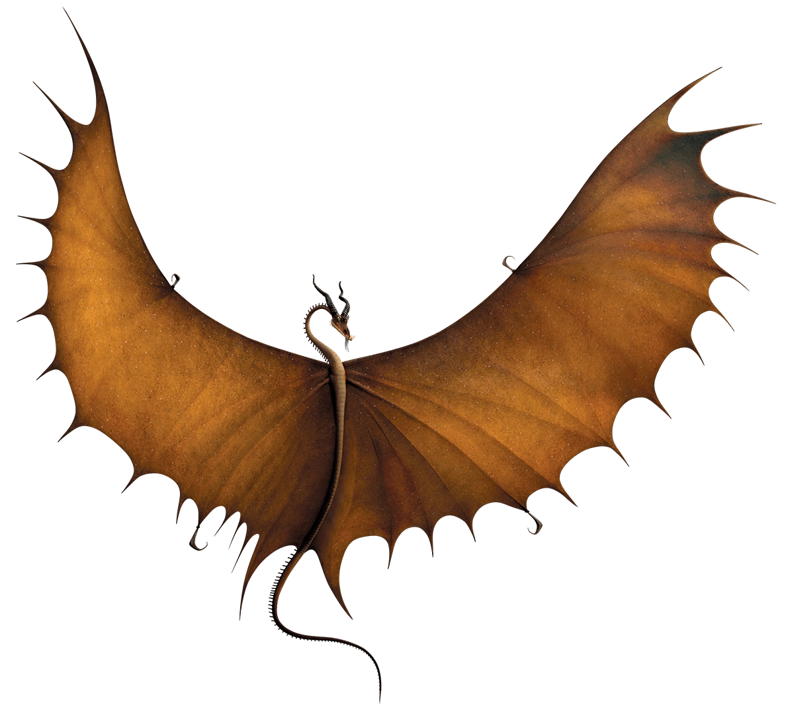

Sharp Class Dragons

Sharp Class dragons are vain and prideful, and all of them possess sharp body parts. Most of these dragons can fire extremely sharp and poisonous projectiles from their bodies, which can quickly be regenerated. Sharp class dragons adore being stroked and generally made a fuss of. They especially love being complimented, due to their nature.
The dragon species included are:
Timberjack
(timberjack)
Description:
Timberjacks are acutely sensitive creatures that prefer the peace and solace found in their beloved forests.
But don't let their introspective demeanor fool you. When attacked, betrayed or offended, Timberjacks will start flailing their expansive wings, whose edges are razor-sharp — sharp enough to shear through the thickest tree trunk and still not slow down a Timberjack's flight.
Those huge wings do more than just chop trees. On the ground, Timberjacks also have the ability to fold their wings around weary riders like a makeshift tent, offering warmth and protection from the elements and other dragons!
Characteristics:
A Timberjack possesses a long serpentine-like body, with several short spines along its back ending in an ordinary pointed tail. Their wingspan is huge, and each wing has two hooks which are located in the middle of each wing on opposite ends pointing in opposite directions. These talons can be used by the Timberjack as weapons for more accurate slicing or as legs, since they obviously lack them. Timberjacks have long necks, a stout head, two horns and several tendrils coming out of their chins.
52.29 meters long & 3.55 meters tall
How to train them:
A Timberjack's long wings make it impossible for the dragon to scratch its back. However, it has been discovered that if humans scratch any hard-to-reach places for it, the Timberjack will be willing to form a bond with them.
Like all dragons treating them with respect such as feeding it fish, the dragon will see the person means no harm.
Contact us
Contact no.: 0991-482-1222
Email: elijahlaqui@gmail.com
Facebook: Elijah Kean Laqui